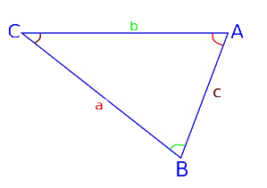

Бездна Геометрии
Теоремы
Теорема Синусов
Стороны треугольника пропорциональны синусам противолежащих углов.
Распишем площадь △ABC через формулу площади через две стороны и угол между ними тремя разными способами:
S(△ABC) = 0,5 * a * b * sin∠C, S(△ABC) = 0,5 * a * c * sin∠B, S(△ABC) = 0,5 * b * c * sin∠A;
Приравняем правые части равенств:
0,5 * a * b * sin∠C = 0,5 * a * c * sin∠B = 0,5 * b * c * sin∠A;
Поделим каждое выражение на 0,5 * a * b * c:
sin∠A / a = sin∠B / b = sin∠C / c;
Теорема доказана.
